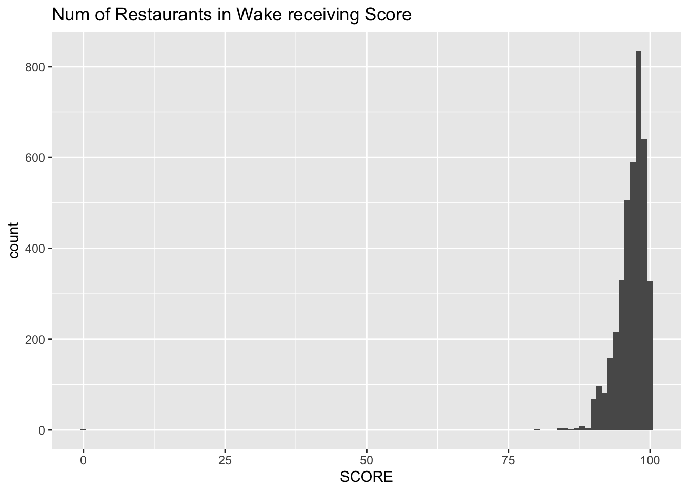
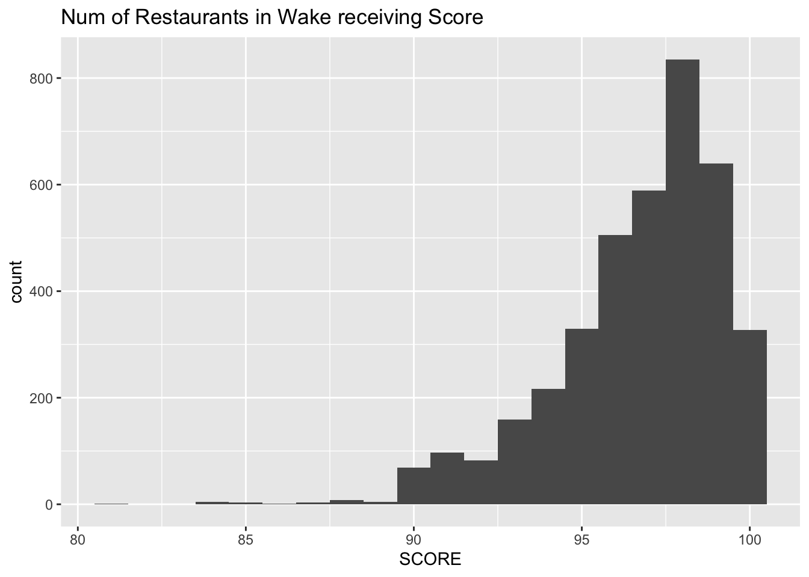

Rows: 3875 Columns: 12
── Column specification ────────────────────────────────────────────────────────
Delimiter: ","
chr (8): HSISID, DESCRIPTION, TYPE, INSPECTOR, NAME, RESTAURANTOPENDATE, CI...
dbl (3): OBJECTID, SCORE, PERMITID
dttm (1): DATE_
ℹ Use `spec()` to retrieve the full column specification for this data.
ℹ Specify the column types or set `show_col_types = FALSE` to quiet this message.
Starting analysis
Now, I will make a histogram of restaurant inspection scores’ distribution
ggplot(data = restaurant_data, mapping =aes(x = SCORE)) +geom_histogram(binwidth =1)+ggtitle("Num of Restaurants in Wake receiving Score")

As you can see, there’s a strong tendency of the score to be in the low 80s at most–and yet it extends all the way to 0. Looking into the dataset, it can be found that there is a single 0 score in the dataset and only one–which can be discounted for graph purposes to look at the main substance of the binning better, at least.
nozeroset <-subset(restaurant_data, SCORE>0)ggplot(data = nozeroset, mapping =aes(x = SCORE)) +geom_histogram(binwidth =1)+ggtitle("Num of Restaurants in Wake receiving Score")

Much better for analysis!
Age of Restaurants
Some restaurants have been around a lot longer–is there a correlation between restaurant age and their general scoring tendency?
I have once again removed the 0 score value, as it makes the graph similarly annoying to read.
#2017-10-22 04:00:00restaurant_data <- restaurant_data %>%mutate(date1 =str_sub(RESTAURANTOPENDATE, end =-13)) %>%mutate(open_date =as.Date(date1,format ="%Y/%m/%d"),open_year =year(open_date))#had to cut off the timestamp at the end, then convert to a date object#redefining nozerosetnozeroset <-subset(restaurant_data, SCORE>0)ggplot(data = nozeroset,mapping =aes(x = open_year, y = SCORE))+geom_point(col ="blue", size =1)#+
Warning: Removed 296 rows containing missing values or values outside the scale range
(`geom_point()`).
It does not appear to have that much correlation–there’s a small trend towards score decreasing as the open year gets closer to the modern day, but it doesn’t appear major.
My first hypothesis would be thinking that re-inspections could simply bump up likelihood of older restaurants having a better final score–but Re-Inspections appear to be quite rare in the dataset, as you can see.
It does appear to vary somewhat! incorporating other factors such as city average wealth, or city population, or competition level for restaurants, or a number of other elements could potentially be interesting to look into.
Inspector variance
Wake county has a team of inspectors, who have likely changed somewhat over the years to boot. Do inspection results vary by inspector?
We can use much the same technique as the previous section, hopefully with less cleaning-up beforehand.
Strange! there appears to be one particular wild outlier from the largely-homogenous averages…But I wonder if this might be our culprit from earlier graphs.
Fascinatingly, it isn’t! examining the dataset indicates that it’s Inspector Meghan Scott who assigned the lone 0 score–not this outlier Inspector Thomas Jumalon. What could be causing this?
##Sample Sizes
Perhaps it’s the sample size to blame? How many inspections has each inspector carried out?
And here the true culprit of the outlier is revealed–the fact that Thomas Jumalon only performed 3 inspections, along with a number of other inspectors who performed few looks. Thomas Jumalon likely happened to make a few lower grades in those mere 3 inspections, without the evident average of 95+ – creating a stark outlier.
# A tibble: 11 × 2
FACILITYTYPE locations
<chr> <dbl>
1 Elderly Nutrition Sites (catered) 8
2 Food Stand 661
3 Institutional Food Service 46
4 Limited Food Service 1
5 Meat Market 93
6 Mobile Food Units 181
7 Private School Lunchrooms 13
8 Public School Lunchrooms 185
9 Pushcarts 39
10 Restaurant 2352
11 <NA> 296
…the sample size means that this kind of result is not surprising, although it may still be illustrative of something. It is likely that something is simply that there are far more restaurants than any other category by a factor of magnitude, and thus naturally they will vary far more, dragging the average down somewhat.
ANALYSIS FOR RESTAURANTS
Since restaurants are where the general public is most likely to interact with the food-service system, Wake County Public Health is particularly interested in sanitation in restaurants.
Thus, here are the above analyses restricted to restaurant type facilities.
It varies by city much like the previous data–and with somewhat different outliers, which is interesting. Clayton, for instance, dropped significantly without the evidently balancing influence of other food facilities–it would be interesting to analyze more deeply here, especially checking what kinds of food facilities are most common in what cities based on this notable shift…